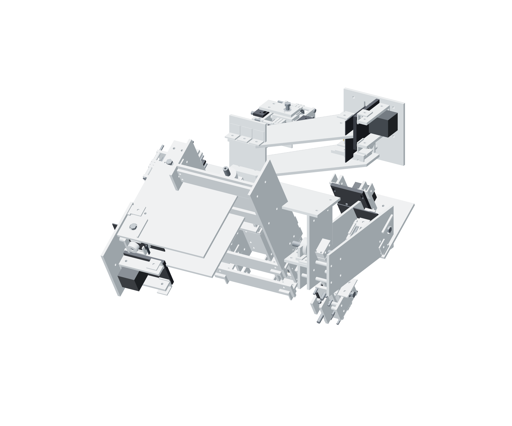

Kit / purchases24 / 179
Sort the purchased kits
Use the Prime purchase checklist for pack quantities and stock credit. These are the assembly counts of the main purchased interfaces.

| Interface | Assembly count | Use |
|---|---|---|
| SBR12 × 400 mm supported rails / blocks | 10 rails / 20 blocks | 6/12 positioner; 4/8 cameras |
| NEMA17 / TMC2209 | 6 / 6 | One motor and driver per screw |
| TR8×2 metal nuts | 18 | Two fixed-end + one driven nut per screw |
| F8-16M thrust bearings | 12 | Two opposed bearings per drive |
| KP08 screw radial bearings | 9 | Six fixed ends + three XYZ floating ends |
| 12 mm output bearings | 6 | Two per gimbal axis |
| GT2 20T pinions / 6 mm belts | 6 / 6 | 4:1 with six printed 80T pulleys |
| Spring friction retainers | 3 | Z, pitch and roll; separate torque windows |
| FoMaKo K20UH / Raynox DCR-250 | 2 / 2 | Dry observation |
Purchase checklist: hardware/gun-positioner/purchases.md. Buy pack quantities there; do not buy this table a second time.